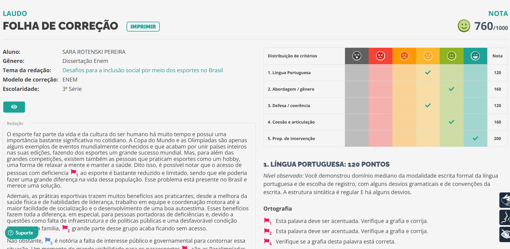
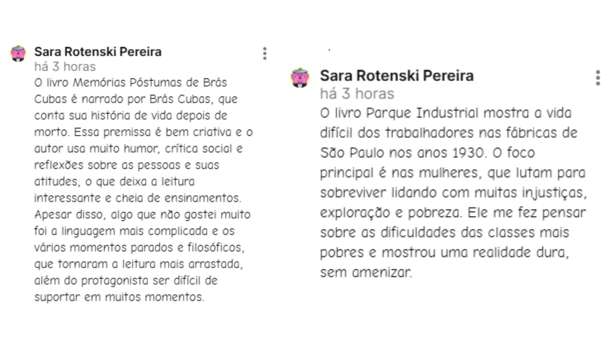

Atividades de Linguagens
1º Trimestre
2º Trimestre
3º Trimestre
Redação sobre Desafios da Inclusão no
Esporte
Para desenvolver e melhorar as habilidades de escrita de redação, nós escrevemos uma no modelo dissertativo-argumentativo referente ao tema "Desafios para a inclusão social por meio dos esportes no Brasil". A redação foi corrigida pela plataforma Red1000 e gostei muito de realizá-la, pois farei ENEM e foi uma boa forma de praticar. Alcancei 760 de nota e para visualizar o print em tamanho aumentado, basta clicar na imagem ao lado!
Competências e habilidades: não encontradas.

Revista Literária
Ao longo do ano, construiremos uma revista literária composta por trabalhos relacionados aos livros cobrados no vestibular da UFSC 2026. O primeiro trabalho desenvolvido foi relacionado ao livro Memórias Póstumas de Brás Cubas, onde eu e meu grupo criamos um anúncio publicitário do emplasto Brás Cubas e escrevemos um verbete biográfico sobre uma personagem feminina de nossa escolha (escolhemos a Dona Plácida). Foi um trabalho muito interessante de desenvolver, melhorou nosso entendimento da história e do contexto onde o livro se encontrava e trabalhou nossa criatividade. Para visualizar a revista, basta clicar na imagem ao lado!
Habilidades: H4 e H24.
Comentários Sobre as Obras
Considerando as seis obras solicitadas no vestibular da UFSC 2026, devemos avaliar e inserir um comentário sobre cada livro no padlet compartilhado enviado pela professora. No primeiro trimestre, tive que ler, avaliar e comentar as obras Memórias Póstumas de Brás Cubas e Parque Industrial. Nos demais trimestres, farei o mesmo com as outras obras. A imagem ao lado é um print dos meus comentários sobre esses dois livros e, para visualizá-lo em tamanho aumentado, basta clicar nele.
Competências e habilidades: não encontradas.

Reconto da obra Pai contra Mãe
Após uma série de revisões das escolas literárias trabalhadas ao longo do ensino médio, li ao conto "Pai contra Mãe" de Machado de Assis e reescrevi uma parte do conto pela perspectiva da mãe. O objetivo era aprofundar o assunto e compreender como essa obra se encaixa e relaciona no contexto histórico da época, o Realismo, além de trabalhar a interpretação da história. Gostei bastante de realizar essa atividade e achei o conto bem interessante. Para ver a atividade completa, basta clicar na imagem ao lado!
Competências e habilidades: não encontradas.
Biografia Profissional
Pensando nos benefícios de escrever uma biografia profissional, como apresentá-la em eventos e entrevistas de emprego quando for solicitado, recebi a missão de escrever a minha. Incluí nela minha data de nascimento, onde nasci, escolas nas quais estudei, meus interesses acadêmicos e interessei profissionais. Gostei dessa atividade pois é algo bastante útil de ter e ela está guardada para quando eu precisar dela. Para lê-la, basta clicar na imagem ao lado!
Competências e habilidades: não encontradas.
Site Informa Enem
Para ampliar nosso repertório sociocultural voltado para o bom desempenho no ENEM, eu e meu grupo criamos o site Informa Enem, com diversas informações relevantes e links para aprofundar o conhecimento, em seis categorias diferentes. A ideia é que o site possa ser utilizado, também, por outros estudantes, para que eles possam ampliar seus repertórios e conhecimentos de mundo. Foi um trabalho muito interessante de desenvolver e muito útil para mim, pois vou fazer o ENEM.
Competências e habilidades: não encontradas.